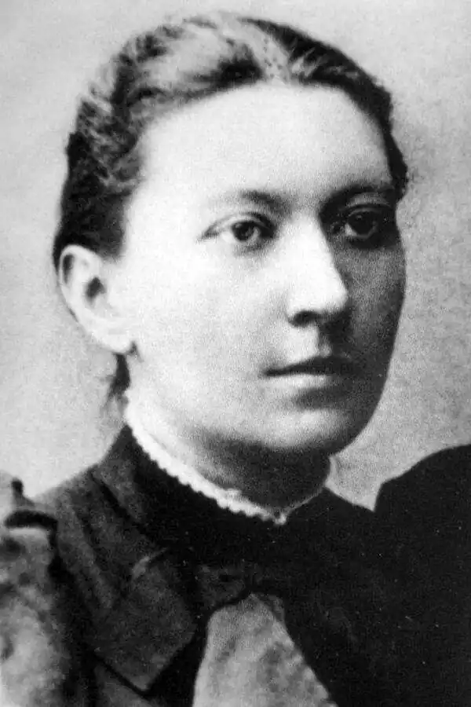

Народилася Дніпрова Чайка (Людмила Олексіївна Василевська-Березіна) 1 листопада 1861 р. у с. Зелений Яр Доманівського району на Миколаївщині в родині священика. Дитинство та молодість її проминули на півдні України. Закінчивши Одеську гімназію 1879 р., вона розпочала педагогічну діяльність спочатку як приватна вчителька, потім працювала у сільських школах Херсонської губернії.
Писати Дніпрова Чайка почала ще в гімназії. Деякі вірші ("На смерть Тургенева") були надруковані в "Одесском вестнике" (1883). В 1885 р. в одеському альманасі "Нива" було вперше надруковано два вірші Дніпрової Чайки ("Вісточка" й "Пісня") та оповідання "Знахарка", яке за своїм характером близьке до запису з народних уст.
1885 р. Дніпрова Чайка приїжджає до Херсона де її чоловік займав посаду губернського статистика. Вона і тут пише вірші, оповідання, лібретто дитячих опер. Починаючи з 1887 р., письменниця друкується здебільшого в періодиці Західної України (альманах "Перший вінок", журнали "Дзвінок", "Правда", "Зоря"), випускає цикл "Морські малюнки". Особливий інтерес у сучасників і найвищу оцінку критиків викликали поезії в прозі ("Мирські малюнки", "Тень несозданных созданий", "Дві птиці", "Морське серце", "Тополя", "Хвиля"). Вона працювала у київській "Просвіті". За пропаганду антиурядової літератури та допомогу політичним в'язням 1905 р. була заарештована. На формування літературно-естетичних смаків мали вплив твори Т. Шевченка, М. Гоголя, О. Пушкіна, М. Лермонтова, І. Тургенєва, Дж. Байрона, Ф. Шіллера, античних поетів і драматургів, згодом — М. Коцюбинського, українських прозаїків XIX — XX ст. Її українські поезії друкували альманахи "Степ", "Нива", "Перший вінок", "Хвиля за хвилею", журнали "Зоря", "Киевская старина", "Літературно-науковий вісник", "Дзвінок" та ін. Творча робота була для письменниці справжнім святом — "весіллям". "Моя горілка — чорні чорнила, весільна шишка — хороша книжка, весільне гільце — легеньке пірце", — афористично висловилась вона у своїй "Записній книжці". Прозова творчість письменниці розпочалася оповіданням "Знахарка" (1884), побудованим на фольклорно-етнографічному матеріалі (І. Франко вказував на "перевантаженість етнографізмом"), У наступних творах зображувала процеси диференціації села ("Уночі", 1896 — 1909; "Вольтер'янець", 1896; "На Солоному", 1911), передавала суспільне піднесення напередодні революції 1905—1907 рр, ("Революціонер", "Месниця", 1901). В окремих творах ("Хрестонос", 1896; "Чи сквитались?", 1899; "Війна не вгаває, війна клекотить...") підносила голос за мир і злагоду в суспільстві, самоочищення й удосконалення людини в толстовському дусі. Оповідання позначені поглибленим психологізмом, тонким дослідженням духовного світу персонажів ("Хрестонос", "У школі", "Чудний", "Тень несозданных созданий" та ін.). Окреме місце в творчості належить поезії у прозі чи ритмізованим мініатюрам під назвою "Морські малюнки" ("Дівчина — чайка", 1892; "Суперечка", 1893; "Скеля", 1893; "Буревісник", 1900; "Шпаки", 1901; "Плавні горять", 1902), написаним у імпресіоністично-символічній манері (їх можна порівняти з ранніми творами цього жанру В. Стефаника, О. Кобилянської). Проте поезія в прозі Дніпрової Чайки більш соціально заангажована, тут порушуються питання долі народу, ролі митця в суспільстві. Тематичний діапазон поезії Дніпрової Чайки передає загальнодемократичні настрої боротьби проти колоніальної політики царизму в Україні; в ній звучать любов і повага до трудівника, вболівання за долю селянства. Традиційною для свого часу була й поетична манера Дніпрової Чайки: ліберально-народницькі гасла ("повна свобода", "розвиток в ріднім краю", "знесення кайданів народу") у її віршах поєднуються з фольклорним і етнографічним елементом. По селах, де працювало подружжя Василевських, вони збирали фольклорні матеріали, записували народні пісні, які потім з голосу Дніпрової Чайки поклали на музику М. Лисенко та А. Канощенко. Створені на цій основі власні поеми — казки для дітей були використані М. Лисенком як лібрето для дитячих опер ("Коза — дереза", "Пан Коцький", "Зима й весна, або Снігова краля"). Перекладала з російської М. Лермонтова "Вийду я тихенько на дорогу", "Мцирі-чернець", "На півночі хмарній", "Парус", О. Пушкіна "Втопник" та з шведської С. Лагєрлеф "Королева Кунгахем", "Інгрід". Значний внесок письменниці у розвиток дитячої літератури — вірші "Зима", "Весна", "Голосіння дітвори"; оповідання "Буряк", "Краплі — мандрівниці"; казки "Казка про Сонце та його сина", "Грецька казка". Виступала зі статтями й рецензіями в педагогічній пресі, діяльно співробітничала в журналі "Дзвінок", цікавилася фольклором. 1884 р. представила на VI Археологічно-етнографічний з'їзд, що відбувся в Одесі, три зошити "Українських народних пісень, що їх співають у Дніпровському уїзді Тавричеської губернії". Багато пісень з голосу письменниці записав М. Лисенко, який створив на її слова кілька романсів. В 1909 р. письменниця захворіла і виїхала на лікування в Одесу, де й перебувала до 1911 р. Невдовзі Дніпрова Чайка тяжко захворіла. Писати змогла вже тільки протягом 1918—20 рр. Померла Дніпрова Чайка 13 березня 1927 р. Похована у Києві на Байковому кладовищі.